August 2026
(12023 - 12053 September 1993)
Date Posted: August 30th
Out and About
London
Me and my family went on a trip to London for my Sister's birthday, to go see Phantom of the Opera! This is like the third time we've seen it live, and it really is just as good as the first time. If you ever get a chance to go see it in person, you absolutely should!! Especially if the Chandelier is rigged to be moved/dropped, like His Majesty's Theatre is.
We had a walk about the riverside parts of the city; I love how dense central London is, there's always something happening around the corner. I've put some pictures in further down the page.
Going Home
Going back to Uni soon, I had a lovely evening flight with a gorgeous sunset!
It's a strange feeling, leaving what used to be home for somewhere that is now home. I don't think I could go back permanently, It's not really a place thats mine, at least not the person that I am now. I am so much more independent here, but I really do miss everyone.
But maybe I'm taking the signs outside too seriously...

Edinburgh Fringe
I finally visited the Edinburgh fringe! I only saw one show, CJ the X's lecture on AI and how we are all affected by Californian Ideology. It felt exactly like I was watching one of their youtube videos, and apparently this is the topic of an upcoming video.
It's been a while since I watched one of their videos, but oh my god this had me hooked, I forgot how much I enjoyed this format of presentation. More lecturers should drink entire bottles of wine over two hours. <33
I also got a poster, I really like the design!
Cameras
Zorki 4 Update
It works!! There dont appear to be any light leaks, the lens is sharp (I messed up when cleaning it, as it no longer can focus to infinity, but thats a very small issue :p ), and the shutter timings seem to be accurate! I think the test roll of Kodak Gold I put in speaks for itself:
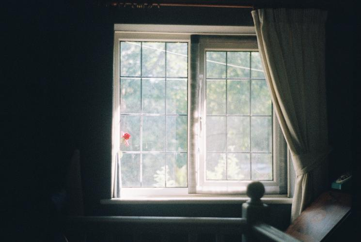
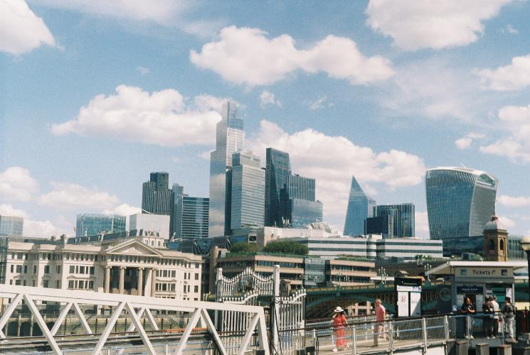
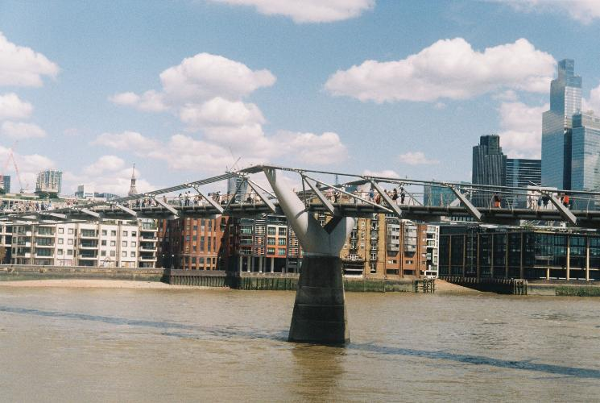
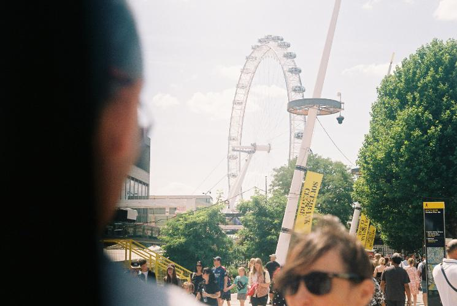
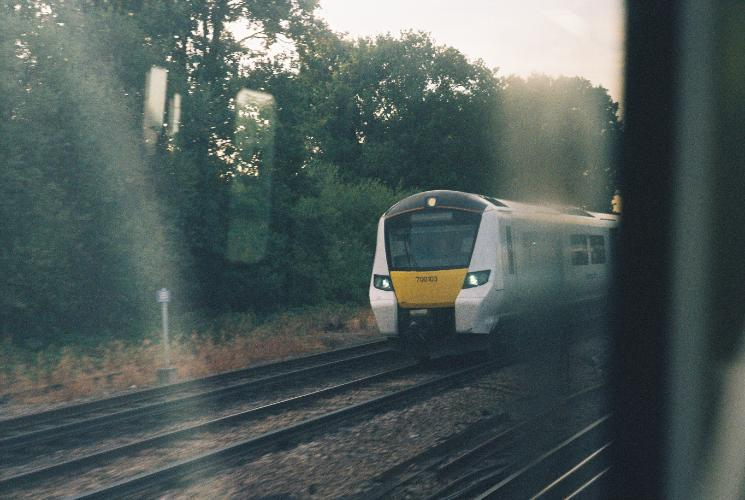
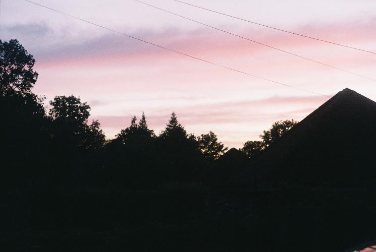
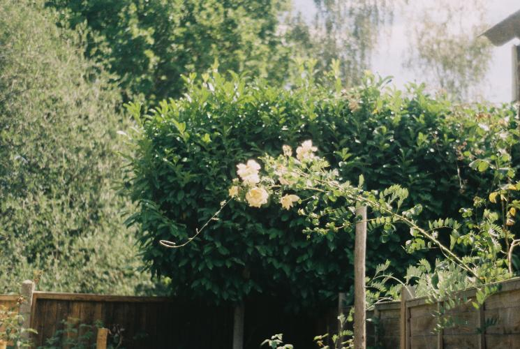
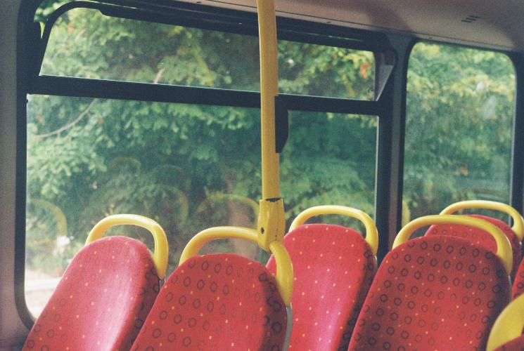
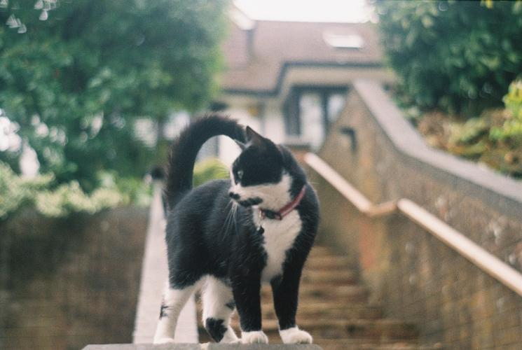
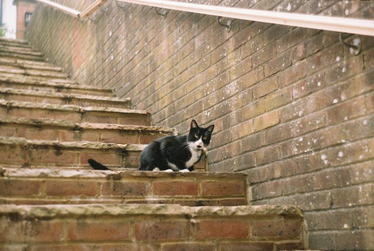
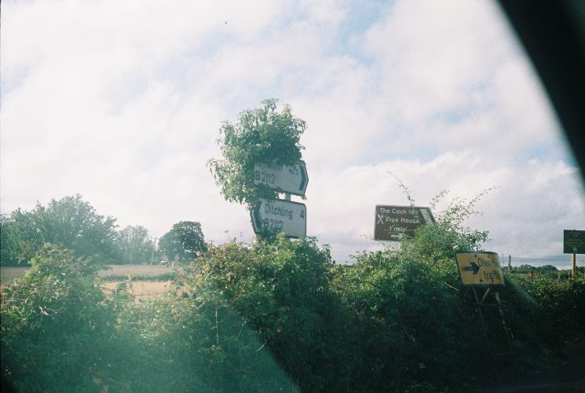
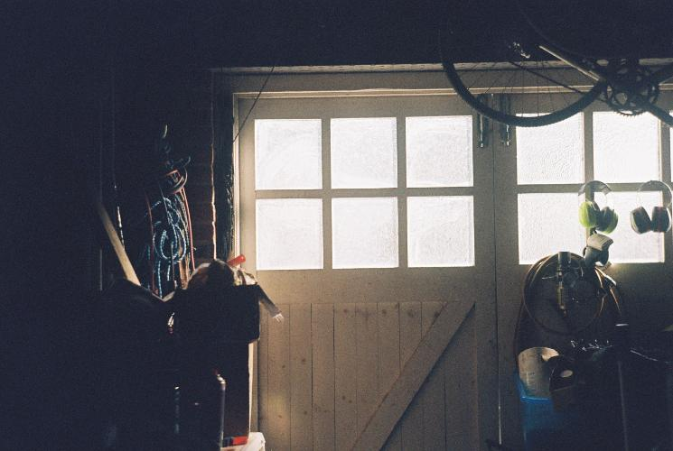
(I did mess up when rewinding the film, and accidentally exposed three of the frames before it was wound back into the canister, but that shouldn't happen again)
Pentax 110 Auto
Alongside the Zorki shots, I also got my reel of Lomography Colour '92, which had a couple of nice shots. I think I'm starting to want something higher-resolution, so I'm probably gonna stop using this camera. I absolutely love it, but its soooo pricey for the shots you get :(. Theres some Lomo Tiger I'm shooting rn, but that will likely be the last for a while.
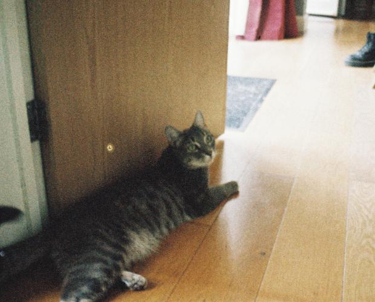
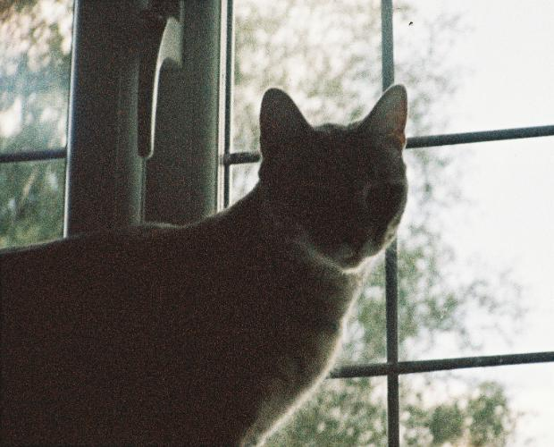
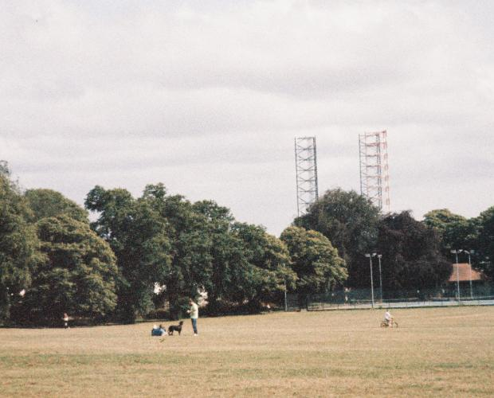
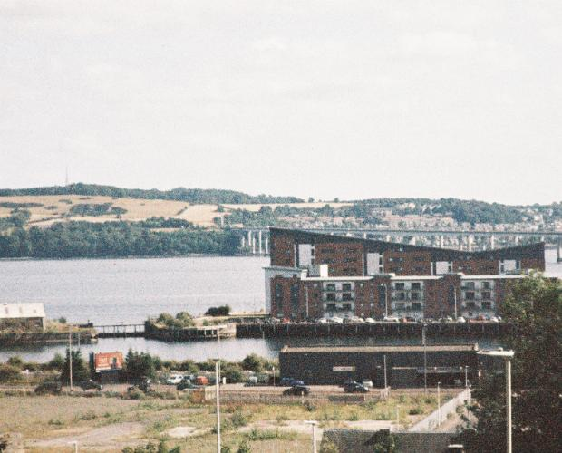
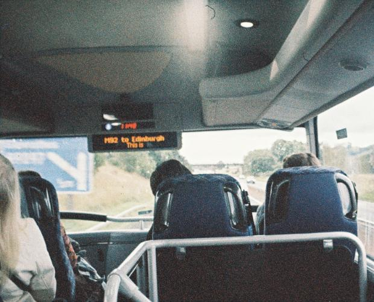
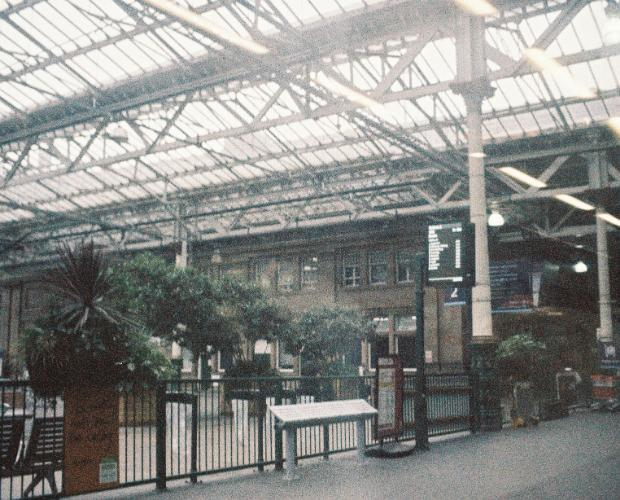
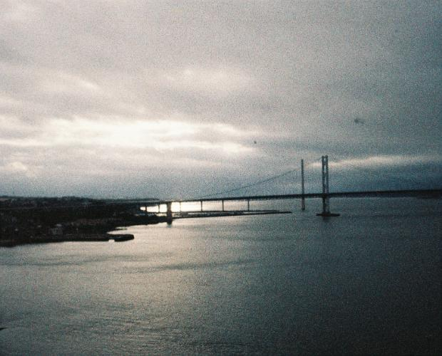
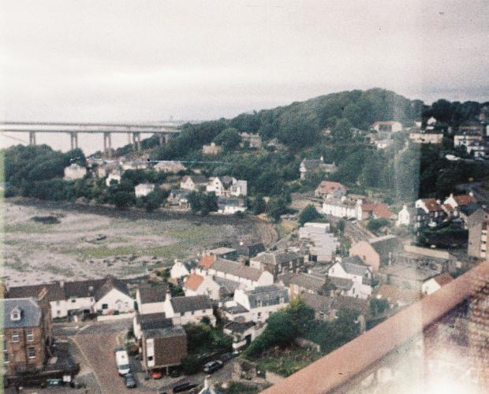
New Point-and-Shoot
One of my friends recently gave me a Pentax Espio 738S, a little plastic point and shoot that uses 35mm. There seems to already be some film inside, a roll of Fujifilm Superia 200. I can't wait to develop it, as it came with ten shots pre-exposed! There's nothing I like more than to have a little glimpse into someone else's life.
Solar Eclipse
As you may know, there was total solar eclipse over Europe this month. Me and some friends walked up a nearby hill for a decent view and despite some cloud, we had a great view up until just after the maximum. I got a few decent pictures, although I didn't have the equipment I would have liked to have for an event like this. There is apparently another in south spain next year, so I might try and catch that one and get a proper timelapse.
This picture is about the maximum coverage we got where I live, but it was still an incredible experience to see the whole area go dark for like ten minutes.
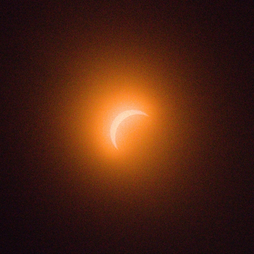
Games
I started playing Peak with some friends, and yeah I can see why they call it that lol
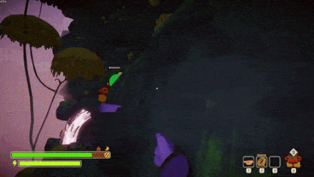